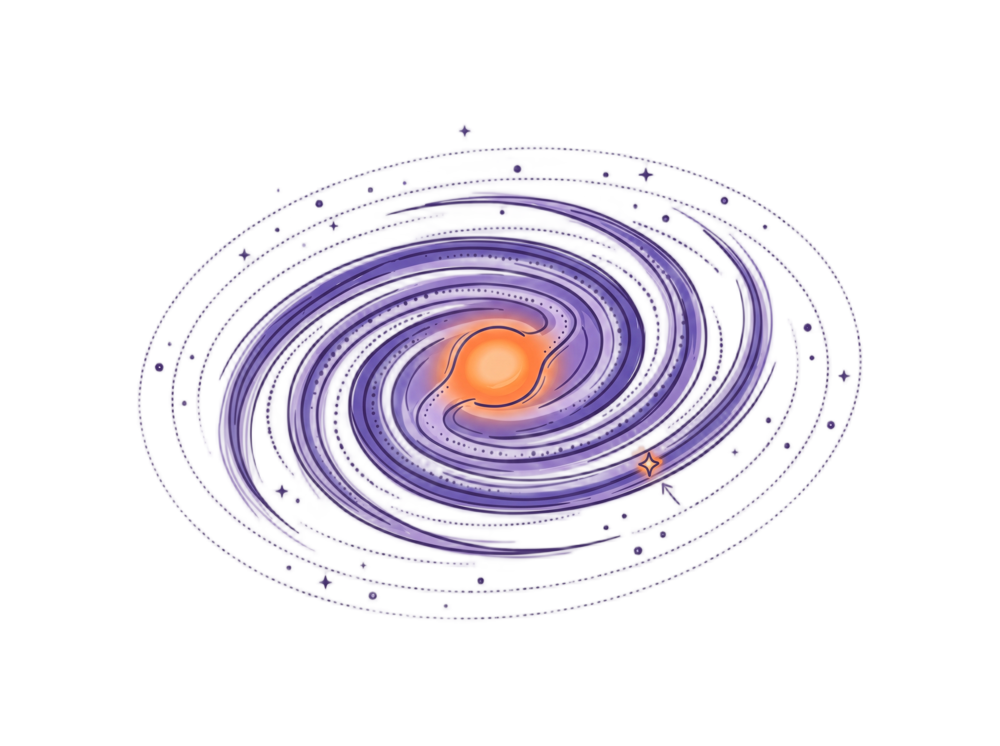

The Milky Way Galaxy
We live inside the Milky Way — a barred spiral galaxy roughly 50 kpc in diameter containing hundreds of billions of stars, vast clouds of gas and dust, and an enormous dark matter halo. Understanding our own Galaxy is both the starting point for all of extragalactic astronomy and a unique challenge: we cannot step outside to photograph it. Everything we know comes from interpreting light and radio waves from an observing platform embedded deep within the disk.
10.2.0 Introduction & Historical Models
The band of the Milky Way — that faint, luminous river crossing the night sky — has fascinated observers since antiquity. It was Galileo Galilei who first resolved it into individual stars using his telescope in 1610. But understanding its structure took another three centuries.
Herschel and Kapteyn: The Sun-Centred Models
In the 1780s, William Herschel attempted a map of the Galaxy by counting stars in 683 sky regions, assuming: (a) all stars have the same absolute magnitude, (b) stellar density is constant, (c) no interstellar extinction, and (d) he could see to the edges of the distribution. His conclusion: the Sun sits near the centre of a disk five times wider than it is thick.
A century later, Jacobus Kapteyn refined this picture using statistical star counts and distance moduli, producing the Kapteyn Universe — a flattened spheroid with the Sun some 650 pc from centre. Both models were wrong for the same reason: they ignored interstellar extinction.
When extinction \(A_\lambda\) is neglected, the naive distance estimate \(d'\) overestimates the true distance \(d\):
Shapley and the Globular Cluster Revolution
Between 1915 and 1919, Harlow Shapley determined distances to 93 globular clusters using RR Lyrae variable stars and their period-luminosity relation. He found the clusters concentrated around a point in Sagittarius, which he rightly identified as the Galactic centre — placing the Sun far from the middle, roughly one-third of the way from centre to edge.
Shapley's estimate of the Galactic diameter (~100 kpc) was too large by about a factor of two, because his RR Lyrae calibration had errors and he under-corrected for extinction. Kapteyn's model was too small; Shapley's was too large. Both erred because of dust.
The Zone of Avoidance
Shapley noted that globular clusters are completely absent within ±10° of the Galactic plane — the zone of avoidance. He incorrectly attributed this to tidal disruption. In reality, interstellar extinction within the disk is so severe (>30 mag toward the Galactic centre) that even intrinsically very bright objects simply cannot be detected at optical wavelengths.
Comparative diagram of the Kapteyn Universe vs. the true Milky Way scale.
10.2.1 Distance Measurement Methods
All structural knowledge of the Galaxy depends on knowing distances. Astronomical distance determination proceeds in a ladder: each rung is calibrated by the one below it, extending our reach step by step from the solar neighbourhood to the far edge of the disk.
1. Trigonometric Parallax
As Earth orbits the Sun, nearby stars appear to shift against the distant background by an angle \(p\). The distance is:
2. Distance Modulus and Photometric Parallax
If the absolute magnitude \(M\) of a star is known, and we measure its apparent magnitude \(m\) and extinction \(A\):
A B0 main-sequence star (\(M_V = -4.0\)) has \(V = +8.2\). Ignoring extinction: \(d' = 10^{(8.2+4.0+5)/5} \approx 2800\,\text{pc}\). With \(k = 10^{-3}\,\text{mag pc}^{-1}\), iterating \(d = 2800 \times 10^{-kd/5}\) gives \(d \approx 1400\,\text{pc}\) — off by a factor of 2!
3. Statistical & Moving Cluster Parallaxes
Overlap of Parallax, Moving Clusters, RR Lyrae, and Cepheids.
10.2.2 Morphology of the Galaxy
The Milky Way is a barred spiral galaxy with a disk diameter of ~50 kpc. The Sun resides at \(R_0 \approx 8.15\,\text{kpc}\) from the Galactic centre (Sgr A*), located ~30 pc above the midplane.
| Component | Mass (\(10^{10}M_\odot\)) | Scale height | \([\text{Fe/H}]\) | Age (Gyr) |
|---|---|---|---|---|
| Thin disk | 6 | 350 pc | −0.5 to +0.3 | <8 |
| Thick disk | 0.2–0.4 | 1 kpc | −2.2 to −0.5 | ~10 |
| Galactic bulge | 1 | 100–500 pc | −2 to +0.5 | 0.2–10 |
| Stellar halo | 0.3 | ~3 kpc | <−5.4 to −0.5 | 11–13 |
| Dark matter halo | 190 (+360/−170) | ~170 kpc | — | ~13.5 |
Edge-on schematic showing Bulge, Thin Disk, Thick Disk, and Halo components.
10.2.3 Galactic Coordinates & Kinematics
Transformation from equatorial \((\alpha,\delta)\) to Galactic coordinates \((\ell,b)\) (J2000.0):
Oort's Formulas for Differential Rotation
Radial velocity \(v_r\) vs. Galactic longitude \(\ell\) and inner-circle tangent line of sight.
10.2.4 Rotation Curve & Dark Matter
A flat rotation curve (\(\Theta = V = \text{const}\)) requires enclosed mass to grow linearly with radius:
Keplerian expectation (\(\propto R^{-1/2}\)) vs. observed flat rotation curve.
10.2.5 The Galactic Centre & Sgr A*
Monitoring of the star S2 (\(P = 15.2\,\text{yr}\), \(e = 0.87\), \(r_p = 120\,\text{AU}\)) yields the mass of the central supermassive black hole Sgr A*:
Astrometric orbit of S2 around Sgr A*.
Setup: The Sun (at \(O\)) and star (at \(S\)) orbit the Galactic centre \(C\) with angular velocities \(\Omega_0\) and \(\Omega(R)\):
Taylor expanding \(\Omega(R)\) about \(R_0\) for \(d \ll R_0\) with \(R - R_0 \approx -d\cos\ell\):
Quantitative problems on this module include: extinction-corrected distance modulus, Oort constant derivations, rotation curve analysis, NFW profile fitting, and Sgr A* accretion luminosity estimates.
Open Module 10 Problems
GitHub-integrated discussion will be loaded here.
Sign in with your GitHub account to comment or ask questions.